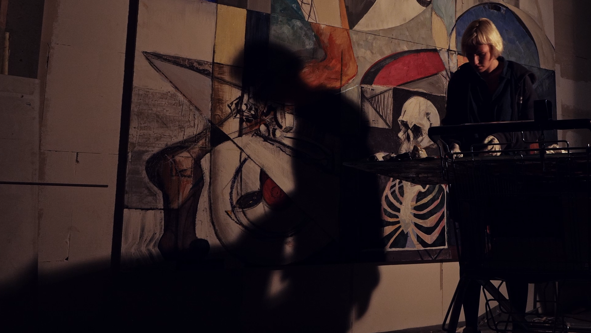

Who am i when i wake up
Link: https://youtu.be/5Kh0xI3qM18 The short documentary movie I have done during my studies in ZHdK, Zurich about Margo, who is originally from Ukraine, while Leo grew up in the Schaffhausen hinterland and comes from Germany. Both are currently in their 5th semester of studying Fine Arts, with Margo having only recently started at the ZHdK. Together, they create a painting as part of the Kammgarn West project in Schaffhausen, which involves adding color to a staircase. This collaborationmarks their first time working together on a large painting. Through the course of the film, we get to know Margo and Leo more intimately, gaining insight into their artistic practices and how their personal lives shape their approach to fine art. Oleksandr Bichuk and Roman Hartl